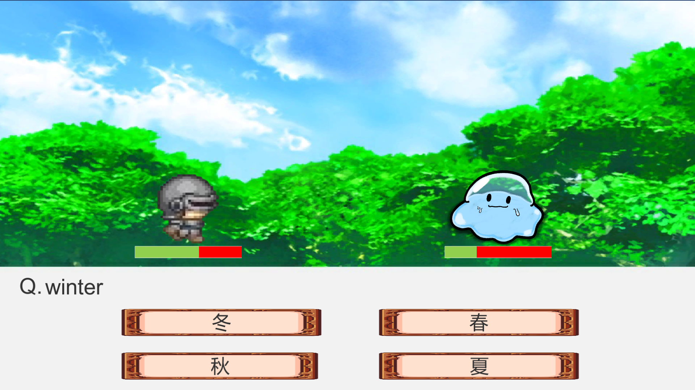
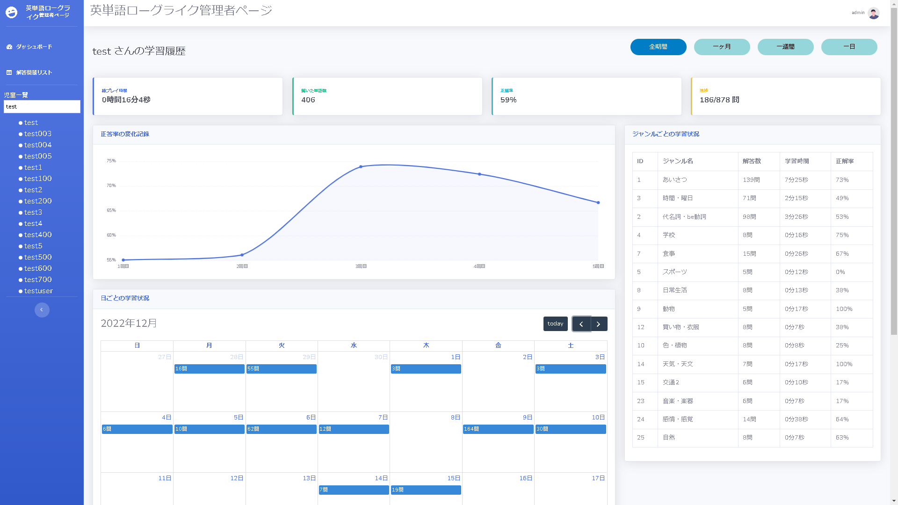
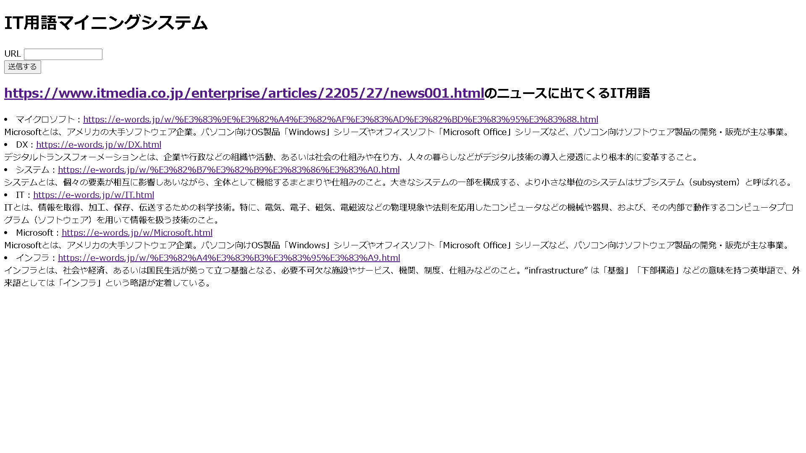

田中俊志 自分広告
制作物
英単語学習RPG
使用した言語・技術など：
unity,
C#,
mySQL
6人のチームで勉強が苦手な中学生を対象とした英単語学習RPGを制作しました。主に問題の出題と記録、システム全体の構成を決めて指示を出すことを担当しました。意識共有や進捗管理など、チームでの開発に重要なことを学びました。

英単語学習RPG学習記録確認ページ
使用した言語・技術など：
Bootstrap,
mySQL,
javaScript(jQuery)
上記の英単語学習RPGの学習履歴データ確認用ページを制作しました。設計書通りになるようにbootstrapを活用してデザインしました。データベースの限られたデータを整理をして多くの情報を表示することを工夫しました。

IT用語学習のためのwebマイニングシステム
使用した言語・技術など：
python,
webマイニング,
形態素解析
ニュース記事に書かれているIT用語の意味を一括で調べるためのシステムを作成しました。記事の文章を形態素解析に掛けて、その記事に載っているIT用語の意味を表示するプログラムです。

自己PR
上記の作品など、多くの制作物を通して、学校で勉強したことを活かしたり、独自で学びながらプログラミングのスキルを身に着けてきました。チームでの開発では、プロジェクトマネジメントの観点を意識して開発に取り組みました。
これまでに学習してきた内容や勉強への取り組み方などを活用し、SEとして活躍し、自らの成長につなげたいと思っています。
このPDFはhttps://tanakasnj.github.io/myadvertisement/のページを出力して作成しました。